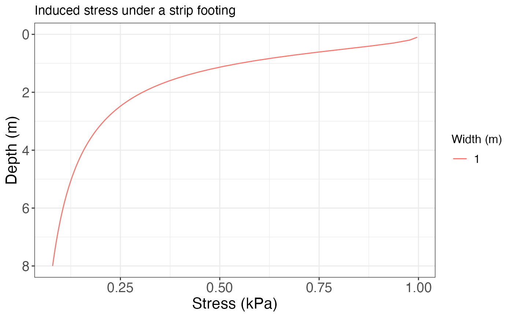
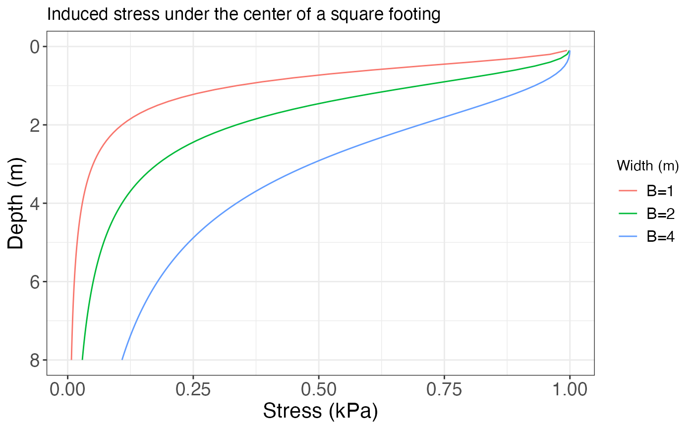
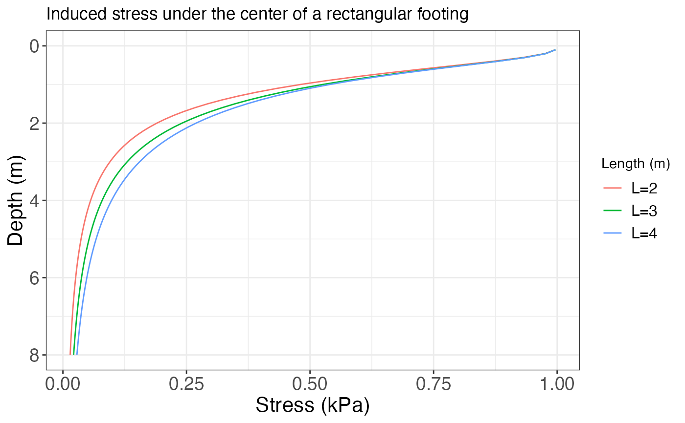

Plots the stress distribution under the center of a footing of different shapes.
Arguments
- qs
The stress applied by the footing onto the surface
- B
The footing's width (in meters)
- L
The footing's length for a rectangular footing (in meters)
- z.end
The depth to which calculate the stresses (in meters)
- footing
Type of footing for which to calculate the stresses (Default is "strip")
- rect.pos
For rectangular or square footings, whether the stress is calculated at the center of the footing (Default is "center") or at the corner of the footing (i.e., at the edge of the footing) (rect.pos = "corner")
Value
A list with three elements: Profile is a tibble with the stress distribution, Plot is a ggplot object with the stress distribution, and Plotly is an interactive plotly object with the stress distribution.
Details
The stresses are calculated using the solutions from Boussinesq. The parameter L only applies for rectangular footings, otherwise is not considered, thus the default value of NULL. For rectangular footings the length (L) can be varied, while for the other footing shapes the width B can be varied. For circular footings the width is equal to the radius (B=R)
References
Holtz, R. D., Kovacs, W. D. & Sheahan, T. C. (2011). An Introduction to Geotechnical Engineering. Prentice Hall.
Budhu, M. (2011). Soil mechanics and foundations (3rd ed). Wiley.
Das, B. M., & Sobhan, K. (2018). Principles of geotechnical engineering (Ninth edition). Cengage Learning.
See also
Other soil mechanics:
Casagrande_LL(),
DS_plot(),
Mohr_Circle(),
bearing_capacity(),
compaction_test(),
fallcone_limits(),
insitu_stress(),
particle_size_graph()
Examples
# Singular value of B for a strip footing
qs = 1
B = 1
L = NULL
z.end = 8
induced_stress(qs, B, L, z.end)
#> $Profile
#> # A tibble: 80 × 3
#> sig.z z B
#> <dbl> <dbl> <dbl>
#> 1 0.997 0.1 1
#> 2 0.977 0.2 1
#> 3 0.937 0.3 1
#> 4 0.881 0.4 1
#> 5 0.818 0.5 1
#> 6 0.755 0.6 1
#> 7 0.696 0.7 1
#> 8 0.642 0.8 1
#> 9 0.593 0.9 1
#> 10 0.550 1 1
#> # ℹ 70 more rows
#>
#> $Plot

#>
#> $Plotly
#>
# Different values of B for a square footing
qs = 1
B = c(1, 2, 4)
L = NULL
z.end = 8
induced_stress(qs, B, L, z.end, footing = "square")
#> $Profile
#> # A tibble: 240 × 3
#> z L sig.z
#> <dbl> <chr> <dbl>
#> 1 0.1 B=1 0.994
#> 2 0.1 B=2 0.999
#> 3 0.1 B=4 1.000
#> 4 0.2 B=1 0.960
#> 5 0.2 B=2 0.994
#> 6 0.2 B=4 0.999
#> 7 0.3 B=1 0.892
#> 8 0.3 B=2 0.982
#> 9 0.3 B=4 0.998
#> 10 0.4 B=1 0.800
#> # ℹ 230 more rows
#>
#> $Plot

#>
#> $Plotly
#>
# Different values of L for a rectangular footing
qs = 1
B = 1
L = c(2, 3, 4)
z.end = 8
res = induced_stress(qs, B, L, z.end, footing = "rectangular")
res$Profile |> dplyr::filter(z==4)
#> # A tibble: 3 × 3
#> z L sig.z
#> <dbl> <chr> <dbl>
#> 1 4 L=2 0.0561
#> 2 4 L=3 0.0794
#> 3 4 L=4 0.0984
res$Plot
